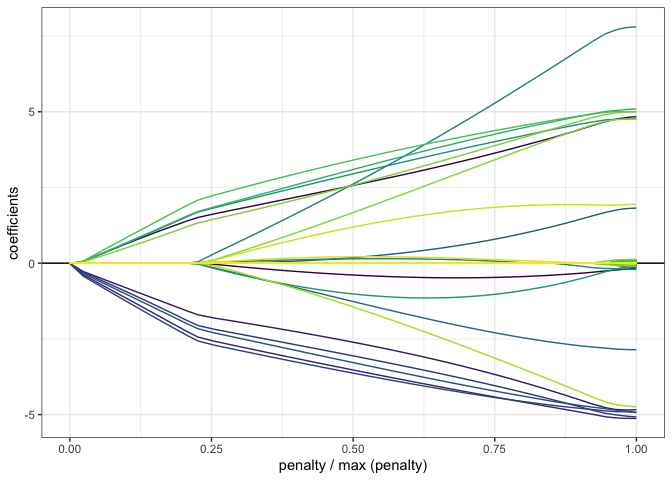

The goal of sparsegl is to fit regularization paths for sparse group-lasso penalized learning problems. The model is fit for a sequence of the regularization parameter lambda.
Installation
You can install the released version of sparsegl from CRAN with:
install.packages("sparsegl")You can install the development version from Github with:
# install.packages("remotes")
remotes::install_github("dajmcdon/sparsegl")Minimal Example
set.seed(1010)
n <- 100
p <- 200
X <- matrix(data = rnorm(n*p, mean = 0, sd = 1), nrow = n, ncol = p)
eps <- rnorm(n, mean = 0, sd = 1)
beta_star <- c(rep(5, 5), c(5, -5, 2, 0, 0),
rep(-5, 5), c(2, -3, 8, 0, 0), rep(0, (p - 20)))
y <- X %*% beta_star + eps
groups <- rep(1:(p / 5), each = 5)
fit1 <- sparsegl(X, y, group = groups)
plot(fit1, y_axis = "coef", x_axis = "penalty", add_legend = FALSE)
Documentation
The package documentation and more examples are available online.